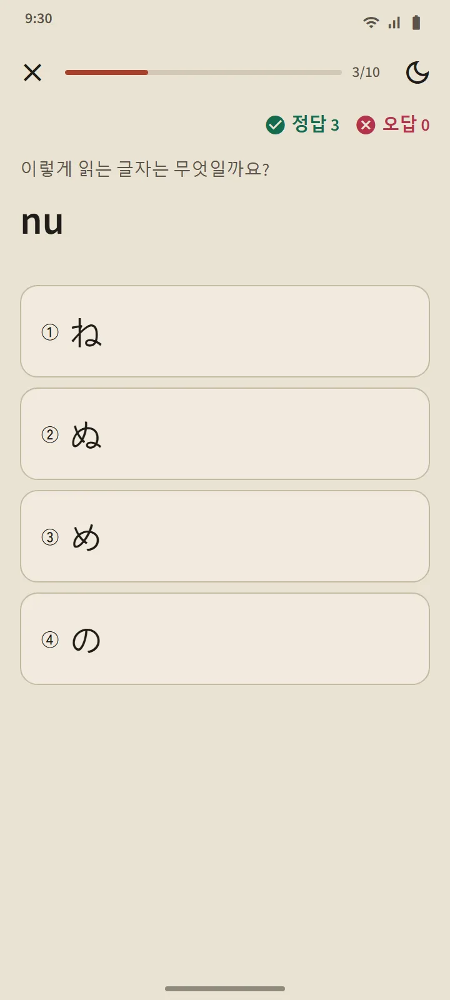

그대로 강의 목록이 되는 표
히라가나와 가타카나 페이지는 홈 화면의 ‘일본어 기초’ 섹션에서 열려요. 위쪽 요약 카드는 외운 글자 수를 세고, 아래 표는 세 묶음이에요: 청음(46자), 탁음·반탁음, 요음(きゃ, しゅ, ちょ 등). 칸이 채워져 있으면 암기, 테두리만 있으면 학습 중이에요.

행마다 강의 하나
표의 각 행이 강의 하나예요: 누르면 소리가 나는 글자 칸, 로마자, 외움 표시, 모든 글자의 획순, 그리고 ‘읽을 수 있는 단어’. 그 행까지 배운 글자만으로 된 실제 사전 단어이고, 먼저 읽어 볼 수 있도록 로마자는 버튼 뒤에 숨어 있어요. ‘이 행 퀴즈’ 버튼으로 강의를 마무리해요.

읽기 규칙
각 표의 마지막 묶음은 초보자가 헷갈리는 규칙을 설명해요: 히라가나의 작은 っ와 장음, 가타카나의 장음 부호 ー, 작은 ッ, 외래어 조합(ファ, ティ, ウィ). 규칙마다 읽을 수 있는 예시 단어가 있어요.
10문제 퀴즈, 복습 일정 없음
가나 퀴즈는 글자에서 로마자, 로마자에서 글자, 소리에서 글자의 세 종류예요. 세 번 연속으로 맞히면 그 글자는 암기가 되고, 틀리면 학습 중으로 내려가요. 단어나 한자와 달리 글자는 복습 일정을 잡지 않아요. 모두 읽을 수 있게 되면 그 표는 끝이에요. 퀴즈 요약에는 점수, 새로 외운 글자, 틀린 글자가 나와요.

어디서 시작할까
앱을 처음 열면 처음부터 시작하는지, 히라가나를 이미 읽을 수 있는지 물어봐요. 대답에 따라 홈 화면에 추천이 하나 나와요: 초보자에게는 ‘히라가나부터 시작하기’, 다른 분에게는 첫 단어 20개. 끝내야 할 체크리스트는 없어요. 같은 카드에서 모든 기능의 짧은 튜토리얼로 갈 수 있고, 언제든 닫을 수 있어요.